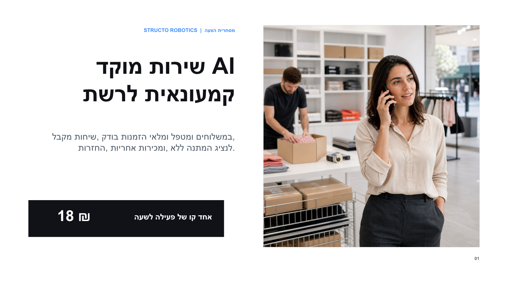

מבינה את הבקשה
כוונה, שפה והקשר לקוח נשמרים לאורך השיחה.
Structor Digital · עובדים וירטואליים לעסק
מתכננים ומטמיעים עובד שירות וירטואלי שמבין את הבקשה, בודק מידע מורשה ב-CRM, בהזמנות, במלאי ובמשלוחים, מבצע פעולות מוגדרות ומעביר חריגים לנציג אנושי.
תשובות מבוססות על נתוני העסק
פעולות רק בהרשאות שהוגדרו
העברה אנושית כשנדרש שיקול דעת
מה משתנה בשירות
מתחילים מסוגי פניות חוזרים שקל להגדיר ולבדוק. המערכת אינה ממציאה מדיניות, הבטחות או תאריכים: כל תשובה תפעולית נשענת על מקור נתונים מאושר.
כוונה, שפה והקשר לקוח נשמרים לאורך השיחה.
הזמנה, מלאי, משלוח, קטלוג, החזרה או אחריות לפי ההרשאות.
פתיחת פנייה, השלמת מידע, תיאום או העברה לזרימת עבודה קיימת.
הלקוח מקבל סיכום מאומת, והעסק מקבל לוג מלא לבקרה.
עובד וירטואלי עם גבולות ברורים
אנו מגדירים מראש אילו תשובות ופעולות מותרות, מתי נדרשת בדיקת מקור ומתי השיחה עוברת לנציג. התוצאה נבחנת בפיילוט לפני הרחבה לקווים או לתהליכים נוספים.
ארכיטקטורת אינטגרציה
המפרט הסופי נקבע לאחר בדיקת API, הרשאות, איכות נתונים, טלפוניה ומדיניות אבטחה. לא כל מערכת מאפשרת כל פעולה.
מודל מסחרי
18₪
לשעת קו פעילה
דוגמה: קו אחד, 8 שעות ביום, 22 ימי עבודה = 3,168 ₪. שלושה קווים באותו היקף = 9,504 ₪. קו אחד 24/7 במשך 30 יום = 12,960 ₪.
המחירים הם המחשה מסחרית לפני מע״מ. טלפוניה, שירותי צד שלישי, שימושי ספקי מודלים ואינטגרציה חד-פעמית אינם כלולים. המחיר הסופי נקבע לאחר בדיקה טכנית והגדרת היקף.
פיילוט ממוקד
הפיילוט נועד לבדוק דיוק, זמן טיפול, שיעור העברה לנציג ואיכות התיעוד לפני הרחבה.
בוחרים סוגי שיחה חוזרים עם מדיניות ומקור נתונים ברורים.
מגדירים API, הרשאות, לוגים ומסלול העברה לנציג.
בדיקות הצלחה, חריגים, נתונים חסרים וביטחון נמוך.
מסכמים תוצאות ומחליטים אם להרחיב, לשנות או לעצור.
שאלות נפוצות על אוטומציית מוקד שירות
כל פרויקט מתחיל בבדיקת המערכות והסיכון התפעולי. תשובות אלה מגדירות את נקודת הפתיחה, לא מחליפות אפיון טכני.
שילוב של שיחה קולית עם גישה מבוקרת למערכות העסק, כדי לבדוק מידע, לבצע פעולות שהוגדרו מראש ולהעביר חריגים לנציג אנושי.
אפשר לבדוק חיבור לטלפוניה, CRM, ERP, הזמנות, מלאי, משלוחים, החזרות ואחריות. ההיתכנות תלויה ב-API, בהרשאות, בנתונים ובמדיניות האבטחה.
לא. מתחילים מתהליכים חוזרים ומוגדרים. חריגים, ביטחון נמוך והחלטות הדורשות שיקול דעת עוברים לנציג אנושי.
בוחרים קו אחד ותהליך אחד, מגדירים מקורות והרשאות, בודקים תרחישים ומודדים דיוק, זמן טיפול, העברה לנציג ואיכות תיעוד.
המודל המסחרי המוצג הוא 18 ₪ לשעת קו פעילה. אינטגרציה, טלפוניה, שירותי צד שלישי ומע״מ מתומחרים בנפרד לאחר בדיקה טכנית.
מגדירים הרשאות, מקורות אמת, פעולות מותרות, יומן ביקורת ותנאי העברה לנציג. מפרט האבטחה מותאם למדיניות ולמערכות של הלקוח.
המצגת המסחרית
בחרו גרסה לצפייה. אפשר לפתוח או להוריד את המצגת המלאה כ-PDF.

בדיקת התאמה ללא התחייבות
נבדוק אילו נתונים ופעולות נדרשים, האם המערכות מאפשרות אינטגרציה ומה יהיה היקף נכון לפיילוט.